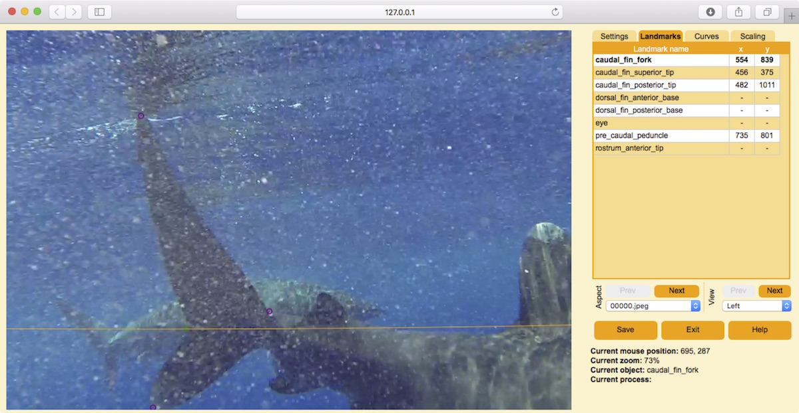

8.2 Measuring 3D lengths
Currently, StereoMorph does not have a tool to measure 3D lengths directly in the digitizing application. However, this can be easily done by using landmarks to define the two end points of the length you would like to measure. This adds flexibility as 3D lengths can then be measured among any identified landmarks.

3D lengths can be measured by using landmarks to define the end points of the length
to be measured. 3D lengths can be measured among any of these identified 4 landmarks
(shown in small purple and green circles). Image is from stereo video frame example
set (courtesy of Caine Delacy and Mark Bond).
1. Reconstruct and read in the 3D landmarks (see the preceding section, reconstructing landmarks).
# Reconstruct all digitized landmarks in Shapes 2D folder reconstructStereoSets(shapes.2d='Shapes 2D', shapes.3d='Shapes 3D', cal.file='calibration.txt') # Read all digitized landmarks in Shapes 3D folder shapes <- readShapes(file='Shapes 3D')
2. Use the StereoMorph function distancePointToPoint() to find the distance between any two landmarks.
# Find distance between two landmarks in the first frame distancePointToPoint(shapes$landmarks[c('caudal_fin_posterior_tip', 'caudal_fin_superior_tip'), , 1])
Previous: Reconstructing landmarks